Introduction
ggforge is a comprehensive visualization framework designed for biomedical and bioinformatics research. This package is greatly inspired by and modified from plotthis by Panwen Wang, with enhancements for high-quality biomedical visualizations.
Core Concepts
Unified API Design
All ggforge plotting functions follow a consistent pattern:
PlotFunction(
data, # Input data frame
x, y, # Main aesthetics
group_by = NULL, # Grouping variable
split_by = NULL, # Split into multiple plots
palette = "Paired", # Color palette
theme = "theme_ggforge", # Theme
... # Function-specific parameters
)Intelligent Type Detection
ggforge automatically detects variable types and applies appropriate styling:
- Continuous: Numeric variables → gradient scales
- Discrete: Factors/characters → discrete colors
- Temporal: Date/DateTime → time axis formatting
Split and Combine
Create multi-panel figures easily with split_by:
LinePlot(..., split_by = "group", combine = TRUE, nrow = 1)Basic Statistical Plots
Scatter Plots
Visualize relationships between two continuous variables:
# Create sample data
scatter_data <- data.frame(
x = rnorm(100),
y = rnorm(100),
group = sample(c("A", "B", "C"), 100, replace = TRUE)
)
scatter_data$y <- scatter_data$y + 0.5 * scatter_data$x
ScatterPlot(
data = scatter_data,
x = "x",
y = "y",
group_by = "group",
palette = "npg",
add_smooth = TRUE,
add_stat = TRUE,
title = "Correlation Analysis",
xlab = "Variable X",
ylab = "Variable Y"
)
Key parameters:
-
add_smooth: Add regression line -
add_stat: Display correlation statistics -
group_by: Color points by group
Box Plots
Compare distributions across groups:
# Create sample data
box_data <- data.frame(
group = rep(c("Control", "Treat1", "Treat2"), each = 40),
value = c(rnorm(40, 10, 2), rnorm(40, 12, 2.5), rnorm(40, 15, 2))
)
BoxPlot(
data = box_data,
x = "group",
y = "value",
palette = "lancet",
add_point = TRUE,
point_alpha = 0.4,
title = "Treatment Effect Comparison",
xlab = "Treatment Group",
ylab = "Expression Level"
)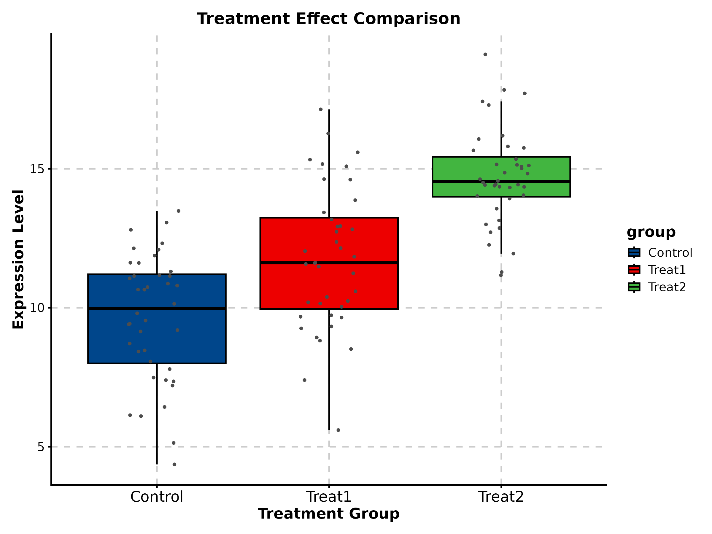
Violin Plots
Show the full distribution shape:
ViolinPlot(
data = box_data,
x = "group",
y = "value",
palette = "npg",
add_box = TRUE,
add_point = TRUE,
point_size = 0.8,
point_alpha = 0.4,
title = "Distribution Comparison"
)
Density Plots
Smooth distribution visualization:
DensityPlot(
data = box_data,
x = "value",
group_by = "group",
palette = "npg",
add_rug = TRUE,
title = "Distribution Density",
xlab = "Expression Value"
)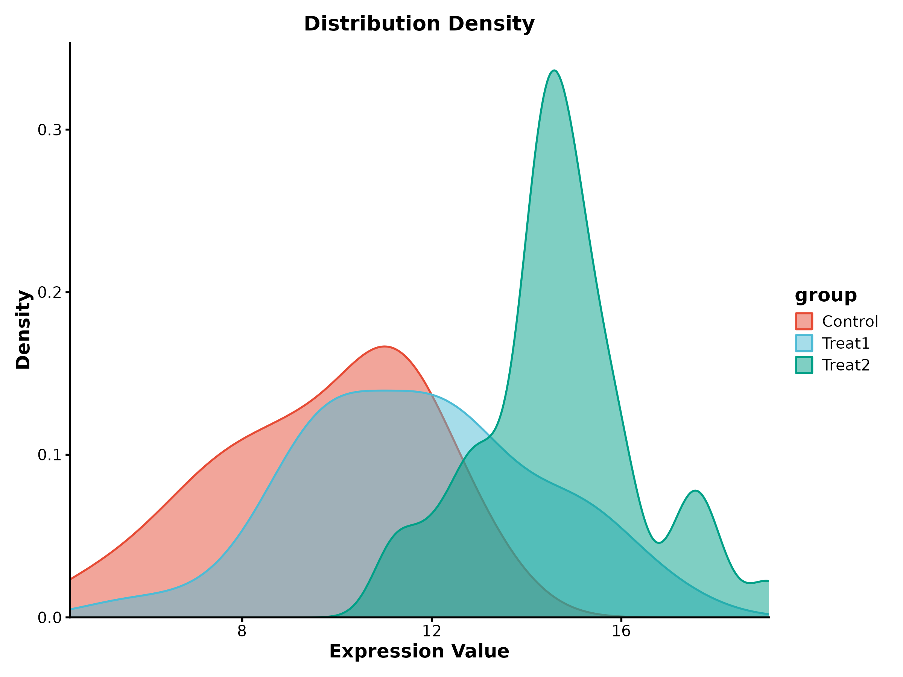
Bar Plots
Summarize data with error bars:
BarPlot(
data = box_data,
x = "group",
y = "value",
palette = "Set2",
add_errorbar = TRUE,
errorbar_type = "se",
title = "Mean Values with Standard Error",
xlab = "Treatment Group",
ylab = "Mean Expression"
)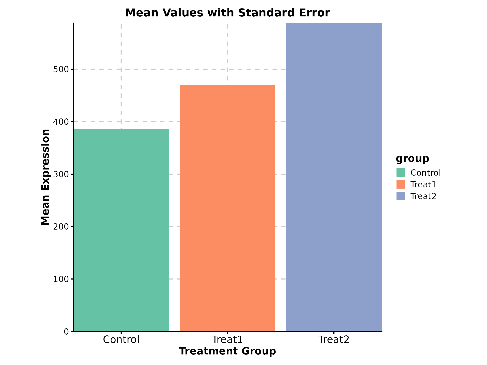
Line Plots
Visualize trends over time or continuous variables:
# Create time series data
time_data <- data.frame(
time = rep(1:10, 3),
value = c(
cumsum(rnorm(10, 0.5, 1)),
cumsum(rnorm(10, 0.3, 1)),
cumsum(rnorm(10, 0.7, 1))
),
group = rep(c("Group A", "Group B", "Group C"), each = 10)
)
LinePlot(
data = time_data,
x = "time",
y = "value",
group_by = "group",
palette = "nejm",
add_point = TRUE,
add_smooth = TRUE,
title = "Time Course Analysis",
xlab = "Time Point",
ylab = "Value"
)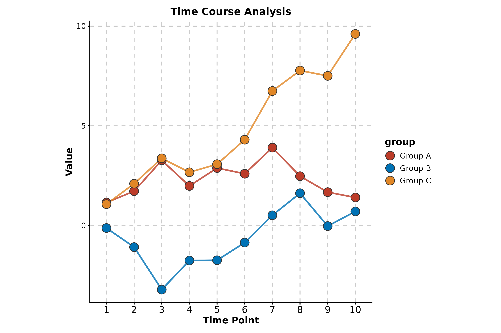
Enrichment Analysis
Enrichment analysis is crucial for interpreting high-throughput biological data.
Enrichment Network
Visualize relationships between enriched terms based on gene overlap:
# Load example enrichment data
data("enrich_multidb_example")
EnrichNetwork(
data = enrich_multidb_example,
top_term = 20,
layout = "fr",
palette = "Set3",
title = "Enrichment Network Analysis"
)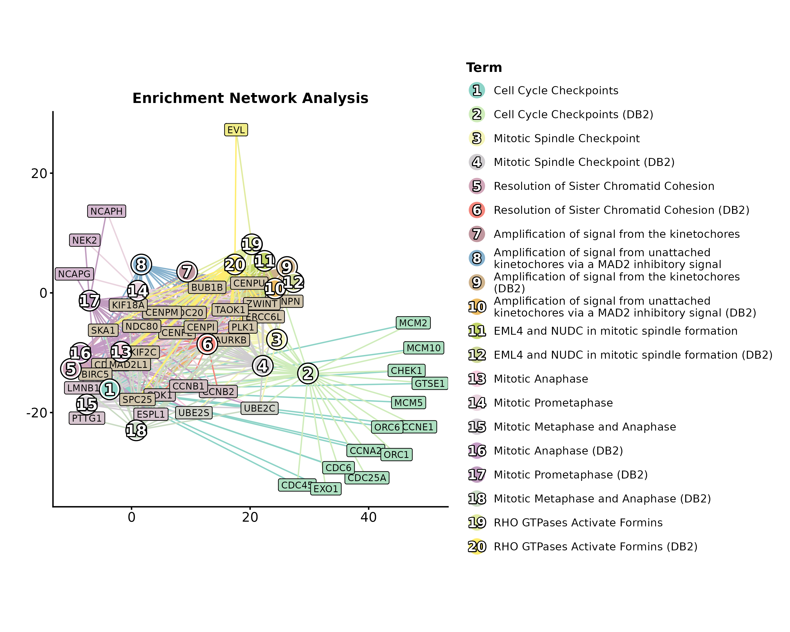
What this shows:
- Nodes represent enriched terms
- Edges connect terms sharing genes
- Node size indicates significance
- Colors distinguish different databases
Enrichment Map
Create similarity-based enrichment maps:
data("enrich_example")
EnrichMap(
data = enrich_example,
top_term = 25,
layout = "fr",
palette = "Spectral",
title = "GO Enrichment Map"
)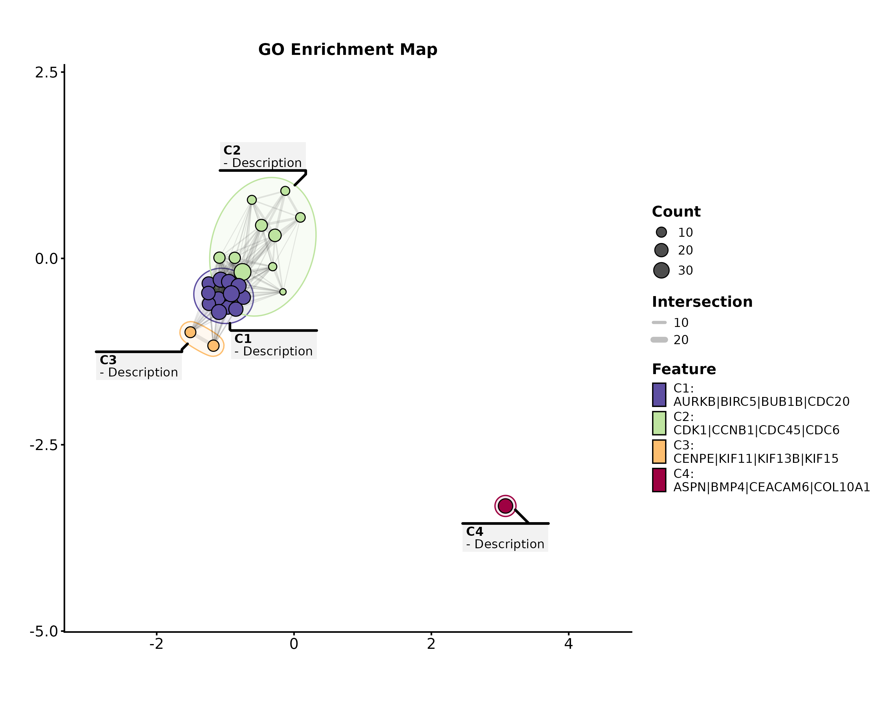
Interpretation:
- Clusters of nodes indicate related biological processes
- Distance reflects similarity between terms
- Useful for identifying major functional themes
GSEA Visualization
Gene Set Enrichment Analysis (GSEA) identifies coordinated changes in pre-defined gene sets.
GSEA Summary Plot
Overview of multiple GSEA results:
# Load GSEA example data
data("gsea_example")
GSEASummaryPlot(
data = gsea_example,
top_term = 20,
palette = "RdBu",
title = "GSEA Results Overview"
)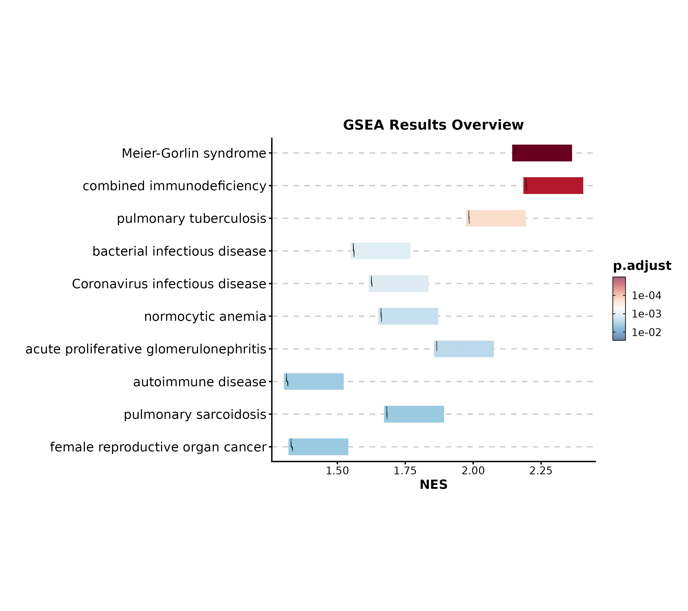
Understanding the plot:
- Each row represents a gene set
- Running enrichment score (RES) shown as line plot
- Normalized enrichment score (NES) shown as color
- Quickly identify up/down-regulated pathways
Individual GSEA Plot
Detailed view of specific pathway enrichment:
GSEAPlot(
data = gsea_example,
gs = gsea_example$ID[1],
title = gsea_example$Description[1]
)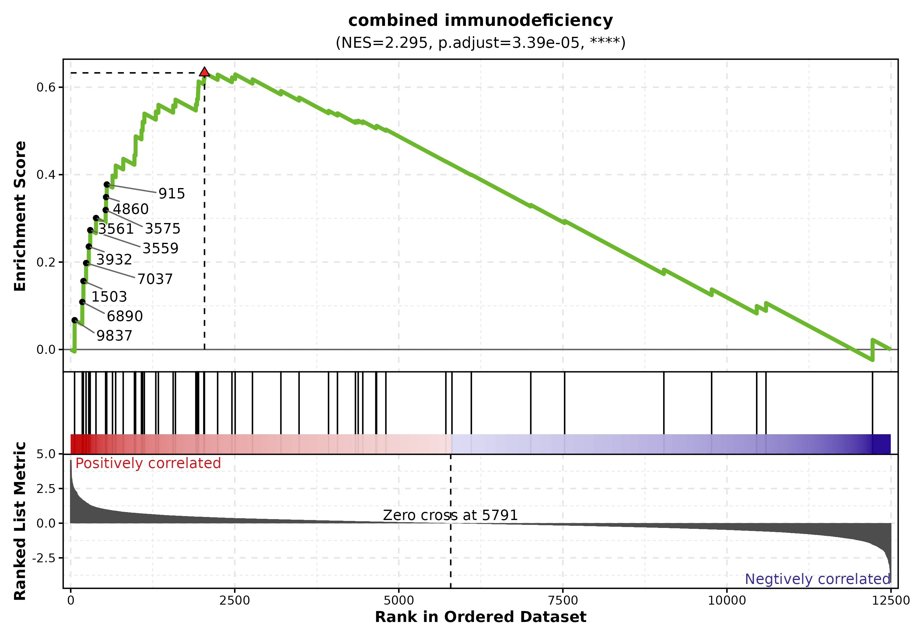
Single-Cell Analysis
Single-cell RNA-seq reveals cellular heterogeneity at unprecedented resolution.
Dimensionality Reduction
Visualize cell populations in reduced dimensions:
# Load dimension reduction example
data("dim_example")
DimPlot(
data = dim_example,
x = "basis_1",
y = "basis_2",
group_by = "clusters",
palette = "igv",
point_size = 1.5,
add_label = TRUE,
label_insitu = TRUE,
title = "Cell Clustering (UMAP)"
)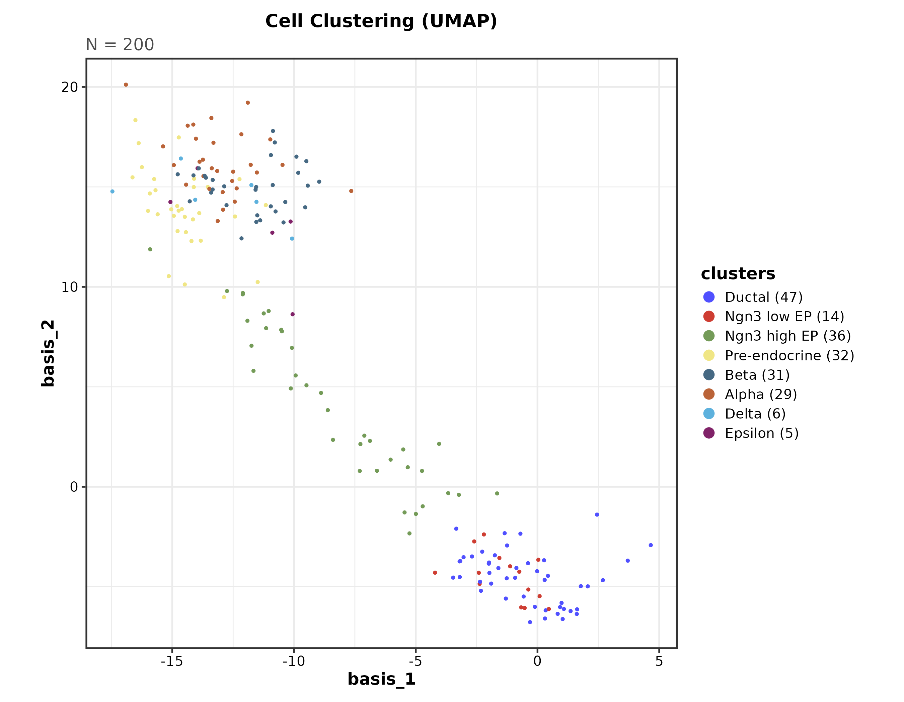
Best practices:
- Use UMAP or t-SNE for visualization
- Color by cluster assignments or cell types
- Add labels for easier interpretation
Feature Expression
Overlay gene expression on dimensionality reduction:
# Create feature data
dim_example$feature <- rnorm(nrow(dim_example))
FeatureDimPlot(
data = dim_example,
x = "basis_1",
y = "basis_2",
feature = "feature",
palette = "viridis",
point_size = 1.5,
title = "Gene Expression on UMAP"
)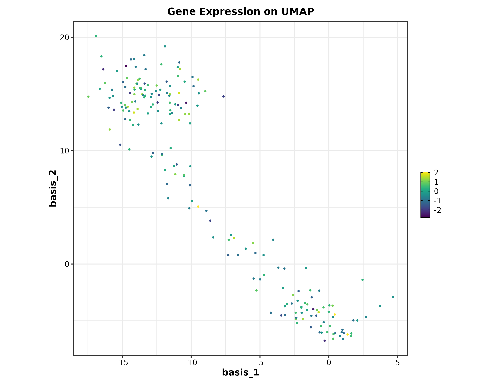
RNA Velocity
Visualize cellular dynamics and differentiation trajectories:
# Prepare embedding matrices
embedding <- as.matrix(dim_example[, c("basis_1", "basis_2")])
v_embedding <- as.matrix(dim_example[, c("stochasticbasis_1", "stochasticbasis_2")])
VelocityPlot(
embedding = embedding,
v_embedding = v_embedding,
plot_type = "grid",
title = "RNA Velocity Analysis"
)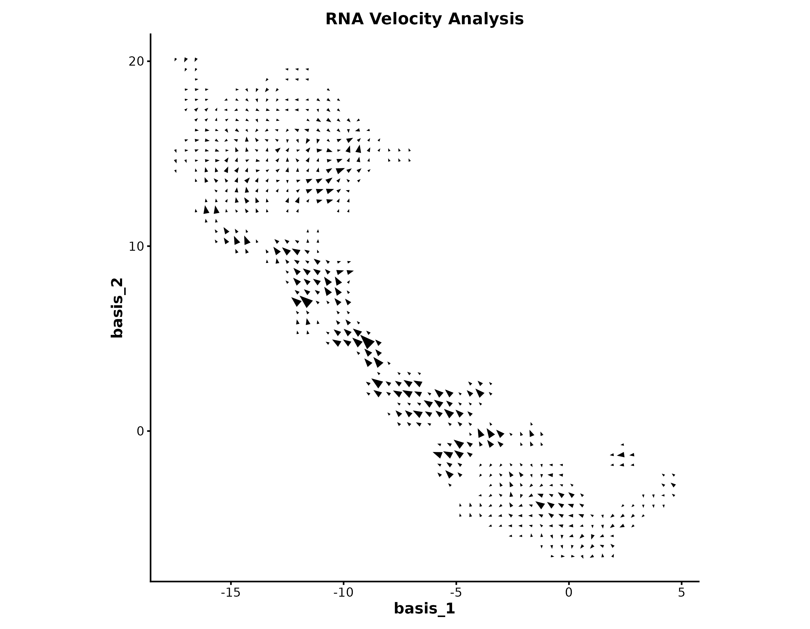
Velocity plot types:
-
raw: Individual cell velocity vectors -
grid: Smoothed velocity field -
stream: Streamline visualization
Genomics Visualization
Volcano Plot
Standard visualization for differential expression:
# Create differential expression data
deg_data <- data.frame(
gene = paste0("Gene", 1:500),
log2FC = rnorm(500, 0, 1.5),
pvalue = runif(500, 0, 0.1)
)
deg_data$padj <- p.adjust(deg_data$pvalue, method = "BH")
# Add some significant genes
sig_up <- sample(1:500, 25)
sig_down <- sample(1:500, 25)
deg_data$log2FC[sig_up] <- abs(rnorm(25, 2, 0.5))
deg_data$log2FC[sig_down] <- -abs(rnorm(25, 2, 0.5))
deg_data$padj[c(sig_up, sig_down)] <- runif(50, 0, 0.01)
VolcanoPlot(
data = deg_data,
x = "log2FC",
y = "padj",
label_by = "gene",
x_cutoff = 1,
y_cutoff = 0.05,
nlabel = 10,
title = "Differential Expression Analysis",
xlab = "log2 Fold Change",
ylab = "-log10(Adjusted P-value)"
)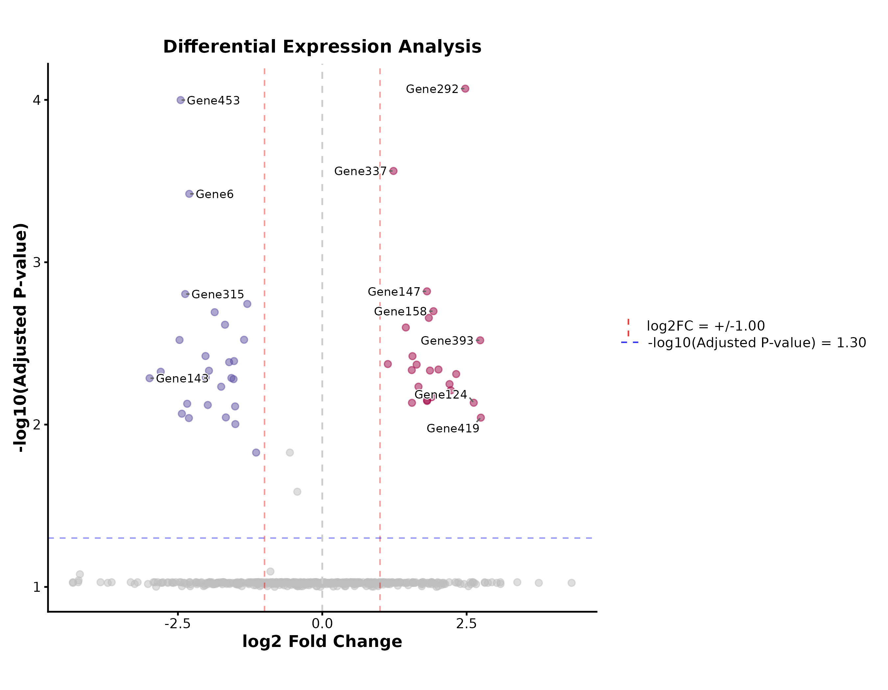
Customization:
- Adjust cutoffs for significance
- Control number of labeled genes
- Use custom color schemes
Manhattan Plot
GWAS and QTL mapping visualization:
# Create sample GWAS data
gwas_data <- data.frame(
chr = rep(paste0("chr", 1:22), each = 500),
pos = rep(1:500, 22) * 1e5,
pvalue = runif(11000, 0, 1)
)
gwas_data$pvalue[sample(1:11000, 30)] <- runif(30, 0, 1e-8)
ManhattanPlot(
data = gwas_data,
chr_by = "chr",
pos_by = "pos",
pval_by = "pvalue",
threshold = 5e-8,
title = "Genome-Wide Association Study"
)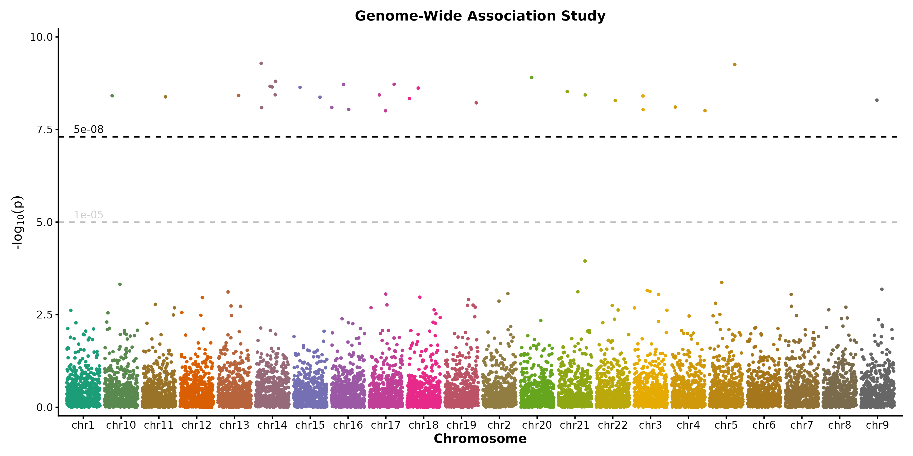
Survival Analysis
Kaplan-Meier survival curves are essential for clinical research:
# Create survival data
surv_data <- data.frame(
time = rexp(150, 0.01),
status = sample(0:1, 150, replace = TRUE, prob = c(0.4, 0.6)),
risk = sample(c("Low", "High"), 150, replace = TRUE)
)
KMPlot(
data = surv_data,
time = "time",
status = "status",
group_by = "risk",
palette = "jco",
add_risktable = TRUE,
add_conf_int = TRUE,
add_pval = TRUE,
title = "Overall Survival Analysis",
xlab = "Time (months)",
ylab = "Survival Probability"
)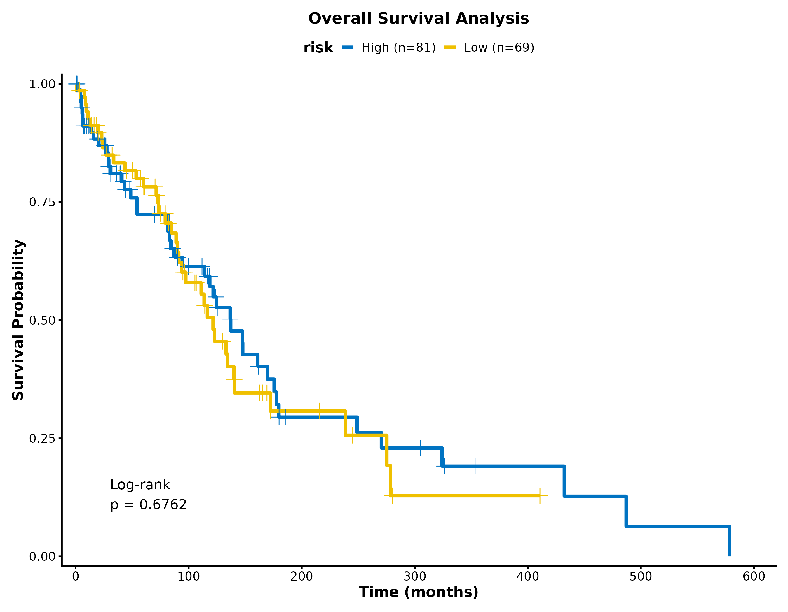
Components:
- Survival curves with confidence intervals
- Risk table showing numbers at risk
- Log-rank test p-value
- Customizable time points
Cox Regression Analysis
Cox proportional hazards model for multivariate survival analysis.
Forest Plot
# Create sample data with multiple covariates
cox_data <- data.frame(
time = rexp(200, 0.01),
event = sample(0:1, 200, replace = TRUE, prob = c(0.3, 0.7)),
age = rnorm(200, 60, 10),
bmi = rnorm(200, 25, 4),
gender = sample(c("Male", "Female"), 200, replace = TRUE),
stage = sample(c("I", "II", "III", "IV"), 200, replace = TRUE),
treatment = sample(c("A", "B"), 200, replace = TRUE)
)
CoxPlot(
data = cox_data,
time = "time",
event = "event",
vars = c("age", "bmi", "gender", "stage", "treatment"),
plot_type = "forest",
palette = "nejm",
title = "Multivariate Cox Regression"
)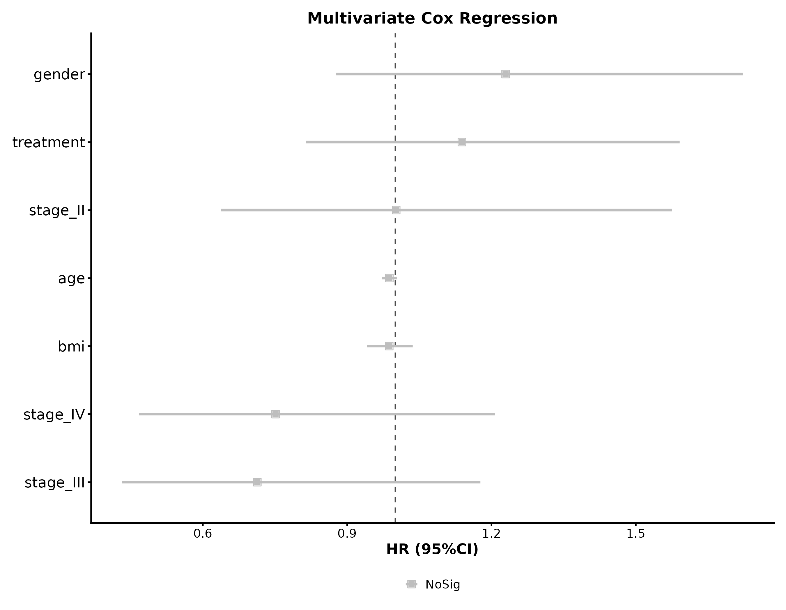
Interpretation:
- Points represent hazard ratios (HR)
- Error bars show 95% confidence intervals
- Colors indicate risk direction: Red (Risky, HR > 1), Blue (Protective, HR < 1), Grey (Not significant)
- Legend positioned at bottom for easy reading
Detailed Forest Plot
CoxPlot(
data = cox_data,
time = "time",
event = "event",
vars = c("age", "gender", "stage", "treatment"),
plot_type = "forest2",
palette = "lancet",
digits = 2,
title = "Cox Analysis with Statistical Details"
)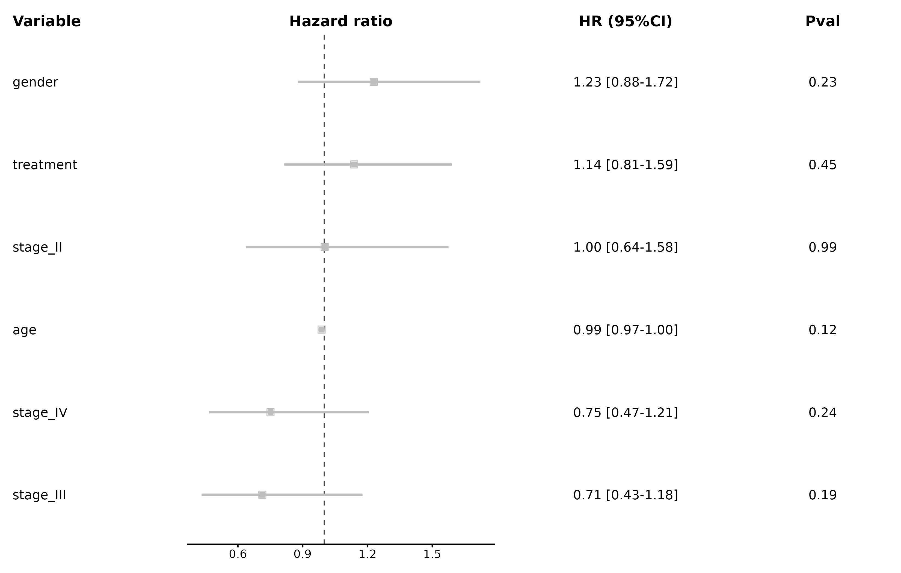
Features:
- Includes statistical table alongside forest plot
- HR values with 95% CI displayed
- P-values for each covariate
- Automatic handling of categorical and continuous variables
Network Visualization
Heatmap
Enhanced heatmap for matrix data:
# Create sample matrix
set.seed(123)
mat <- matrix(rnorm(100), 10, 10)
rownames(mat) <- paste0("Gene", 1:10)
colnames(mat) <- paste0("Sample", 1:10)
Heatmap(
data = mat,
palette = "RdBu",
title = "Gene Expression Heatmap"
)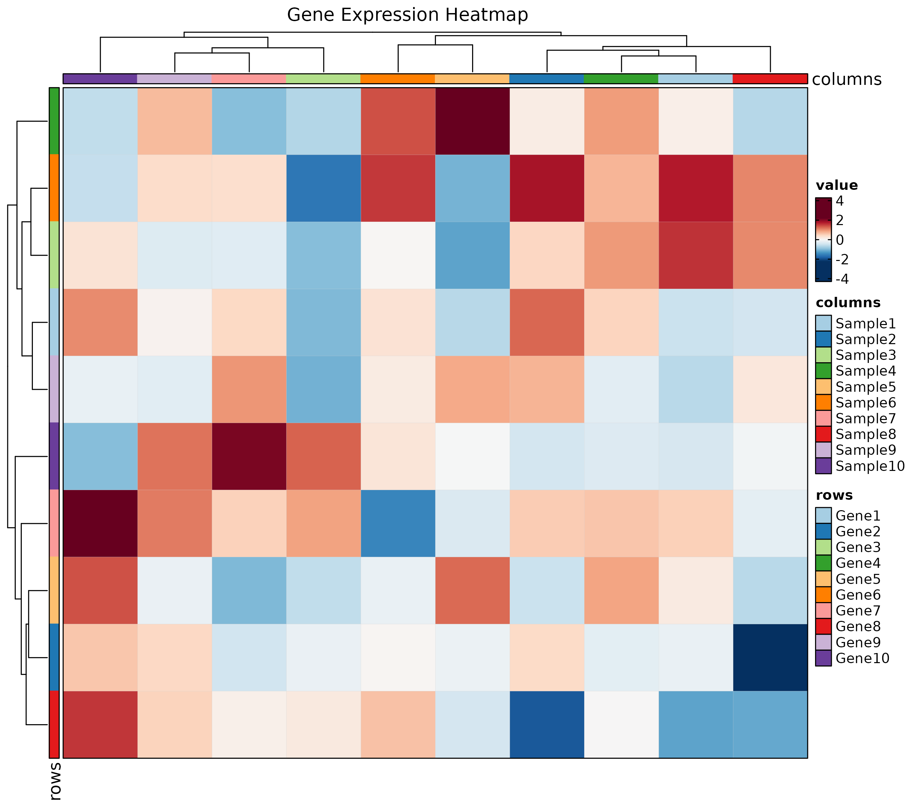
Chord Diagram
Visualize relationships between categories:
# Create interaction data
chord_data <- data.frame(
from = c("CD4 T", "CD8 T", "B cell", "NK", "Monocyte"),
to = c("Fibroblast", "Endothelial", "Fibroblast", "Tumor", "Tumor"),
value = c(15, 20, 10, 25, 18)
)
ChordPlot(
data = chord_data,
from = "from",
to = "to",
y = "value",
palette = "Set3",
title = "Cell-Cell Interaction Network"
)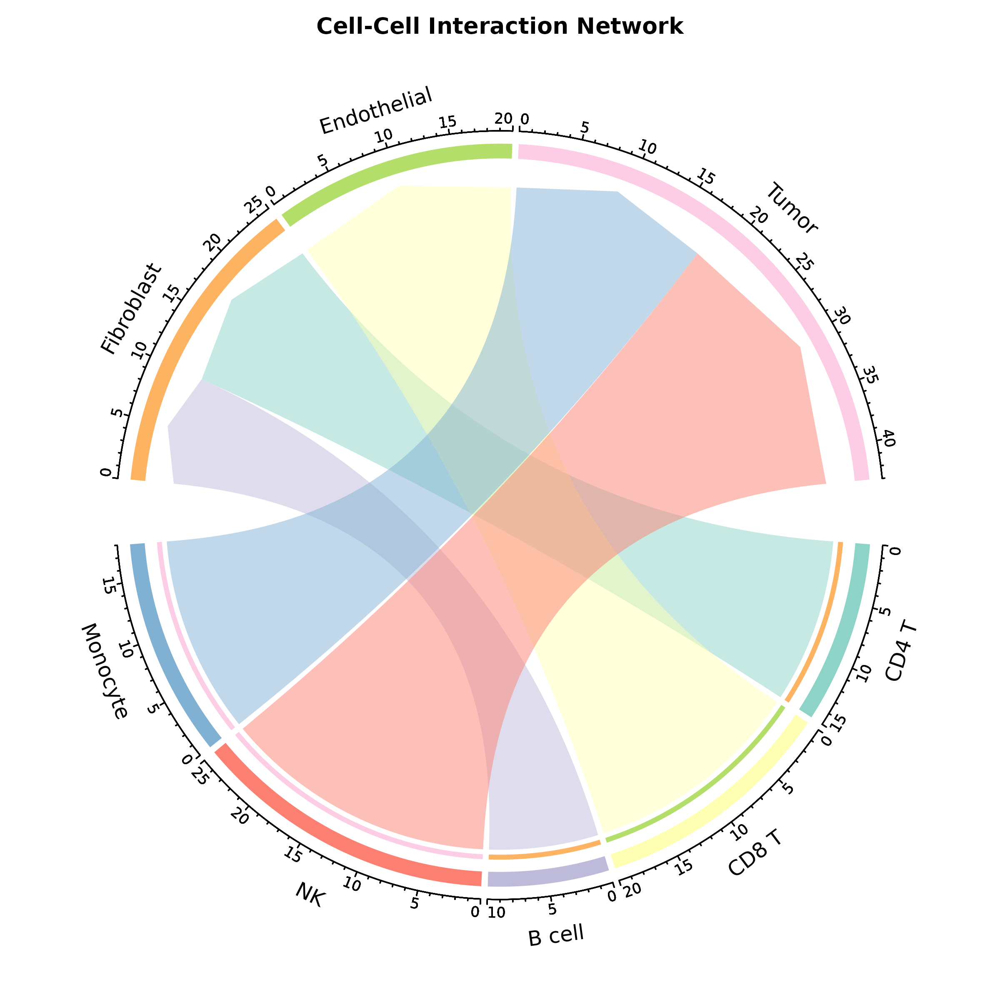
Venn Diagram
Visualize set overlaps:
# Create gene sets
venn_data <- list(
SetA = paste0("Gene", 1:100),
SetB = paste0("Gene", 50:150),
SetC = paste0("Gene", 80:180)
)
VennDiagram(
data = venn_data,
palette = "Set2",
title = "Gene Set Overlap"
)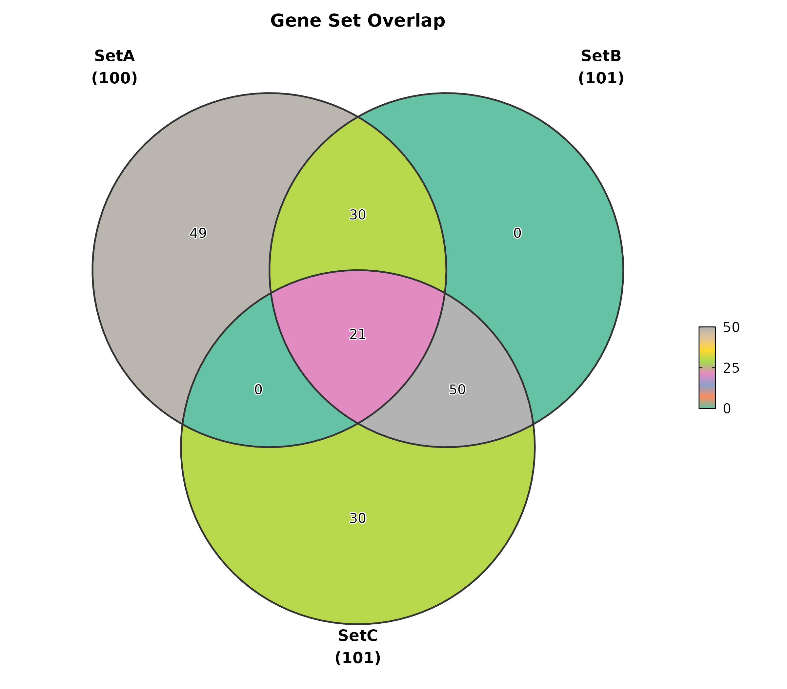
Color Palettes
ggforge includes extensive color palettes from multiple sources:
# Show available palettes
show_palettes(head(names(palette_list), 20))
#> [1] "1" "2" "3" "4" "5" "6" "7" "8" "9" "10" "11" "12" "13" "14" "15"
#> [16] "16" "17" "18" "19" "20"Palette sources:
- RColorBrewer palettes
- ggsci journal palettes (Nature, Science, NEJM, Lancet, JAMA, JCO)
- viridis color scales
- d3 categorical scales
Usage tips:
- Use colorblind-friendly palettes (viridis, cividis)
- Match palette to data type (sequential vs. categorical)
- Consider journal requirements
Advanced Features
Multi-Panel Layouts
Create complex multi-panel figures with split_by:
# Create data with multiple groups
multi_data <- data.frame(
x = rep(1:10, 9),
y = rnorm(90, rep(1:3, each = 30), 0.5),
group = rep(c("A", "B", "C"), each = 30),
condition = rep(rep(c("Ctrl", "Treat1", "Treat2"), each = 10), 3)
)
LinePlot(
data = multi_data,
x = "x",
y = "y",
group_by = "condition",
split_by = "group",
palette = "nejm",
add_point = TRUE,
combine = TRUE,
nrow = 1
)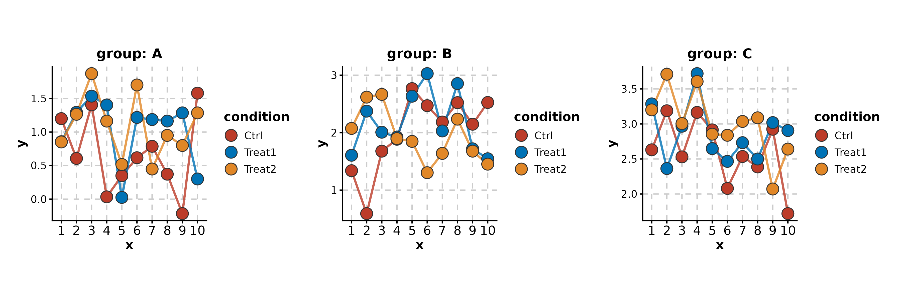
Faceting
Use facet_by for within-plot faceting:
# Create faceted data
facet_data <- data.frame(
x = rep(1:20, 6),
y = rnorm(120) + rep(rep(c(0, 2, 4), each = 20), 2),
condition = rep(c("Cond1", "Cond2"), each = 60),
time = rep(rep(c("Day1", "Day2", "Day3"), each = 20), 2)
)
LinePlot(
data = facet_data,
x = "x",
y = "y",
group_by = "condition",
facet_by = "time",
palette = "jco",
add_smooth = TRUE
)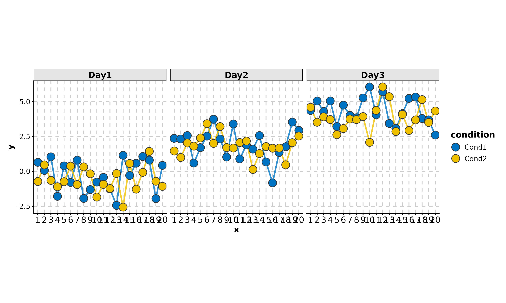
Best Practices
Data Preparation
Always ensure your data is in tidy format:
- One row per observation
- One column per variable
- Each value in its own cell
Color Selection
Guidelines for choosing colors:
- Colorblind-friendly: Use viridis, cividis, or similar
- Consistency: Use same colors for same categories across figures
- Contrast: Ensure sufficient contrast for readability
- Journal requirements: Check specific requirements
Troubleshooting
Getting Help
-
Documentation:
?FunctionNameorhelp(FunctionName) -
Examples:
example(FunctionName) - GitHub Issues: https://github.com/Zaoqu-Liu/ggforge/issues
- Email: liuzaoqu@163.com
Acknowledgments
This package is greatly inspired by and modified from plotthis by Panwen Wang. We are deeply grateful for the original work and design philosophy that made ggforge possible.
We also acknowledge: - ggplot2 for the grammar of graphics - patchwork for multi-panel composition - The entire R community for their excellent packages
Session Info
sessionInfo()
#> R version 4.5.2 (2025-10-31)
#> Platform: x86_64-pc-linux-gnu
#> Running under: Ubuntu 24.04.3 LTS
#>
#> Matrix products: default
#> BLAS: /usr/lib/x86_64-linux-gnu/openblas-pthread/libblas.so.3
#> LAPACK: /usr/lib/x86_64-linux-gnu/openblas-pthread/libopenblasp-r0.3.26.so; LAPACK version 3.12.0
#>
#> locale:
#> [1] LC_CTYPE=C.UTF-8 LC_NUMERIC=C LC_TIME=C.UTF-8
#> [4] LC_COLLATE=C.UTF-8 LC_MONETARY=C.UTF-8 LC_MESSAGES=C.UTF-8
#> [7] LC_PAPER=C.UTF-8 LC_NAME=C LC_ADDRESS=C
#> [10] LC_TELEPHONE=C LC_MEASUREMENT=C.UTF-8 LC_IDENTIFICATION=C
#>
#> time zone: UTC
#> tzcode source: system (glibc)
#>
#> attached base packages:
#> [1] stats graphics grDevices utils datasets methods base
#>
#> other attached packages:
#> [1] dplyr_1.1.4 ggplot2_4.0.1 ggforge_1.0.0
#>
#> loaded via a namespace (and not attached):
#> [1] gridExtra_2.3 rlang_1.1.6 magrittr_2.0.4
#> [4] clue_0.3-66 GetoptLong_1.1.0 matrixStats_1.5.0
#> [7] compiler_4.5.2 png_0.1-8 systemfonts_1.3.1
#> [10] vctrs_0.6.5 reshape2_1.4.5 stringr_1.6.0
#> [13] crayon_1.5.3 pkgconfig_2.0.3 shape_1.4.6.1
#> [16] fastmap_1.2.0 backports_1.5.0 labeling_0.4.3
#> [19] ggraph_2.2.2 rmarkdown_2.30 ragg_1.5.0
#> [22] purrr_1.2.0 xfun_0.54 cachem_1.1.0
#> [25] jsonlite_2.0.0 tweenr_2.0.3 cluster_2.1.8.1
#> [28] broom_1.0.11 parallel_4.5.2 R6_2.6.1
#> [31] bslib_0.9.0 stringi_1.8.7 RColorBrewer_1.1-3
#> [34] car_3.1-3 jquerylib_0.1.4 ggmanh_1.14.0
#> [37] Rcpp_1.1.0 iterators_1.0.14 knitr_1.50
#> [40] zoo_1.8-14 IRanges_2.44.0 Matrix_1.7-4
#> [43] splines_4.5.2 igraph_2.2.1 tidyselect_1.2.1
#> [46] dichromat_2.0-0.1 abind_1.4-8 yaml_2.3.11
#> [49] viridis_0.6.5 ggVennDiagram_1.5.4 doParallel_1.0.17
#> [52] codetools_0.2-20 ggwordcloud_0.6.2 lattice_0.22-7
#> [55] tibble_3.3.0 plyr_1.8.9 withr_3.0.2
#> [58] S7_0.2.1 evaluate_1.0.5 gridGraphics_0.5-1
#> [61] desc_1.4.3 survival_3.8-3 polyclip_1.10-7
#> [64] xml2_1.5.1 circlize_0.4.16 pillar_1.11.1
#> [67] ggpubr_0.6.2 carData_3.0-5 stats4_4.5.2
#> [70] checkmate_2.3.3 foreach_1.5.2 generics_0.1.4
#> [73] metR_0.18.2 S4Vectors_0.48.0 scales_1.4.0
#> [76] glue_1.8.0 proxyC_0.5.2 tools_4.5.2
#> [79] ggnewscale_0.5.2 data.table_1.17.8 ggsignif_0.6.4
#> [82] forcats_1.0.1 fs_1.6.6 graphlayouts_1.2.2
#> [85] tidygraph_1.3.1 grid_4.5.2 tidyr_1.3.1
#> [88] colorspace_2.1-2 patchwork_1.3.2 ggforce_0.5.0
#> [91] Formula_1.2-5 cli_3.6.5 textshaping_1.0.4
#> [94] viridisLite_0.4.2 ComplexHeatmap_2.26.0 gtable_0.3.6
#> [97] rstatix_0.7.3 sass_0.4.10 digest_0.6.39
#> [100] BiocGenerics_0.56.0 ggrepel_0.9.6 rjson_0.2.23
#> [103] farver_2.1.2 memoise_2.0.1 htmltools_0.5.9
#> [106] pkgdown_2.2.0 lifecycle_1.0.4 GlobalOptions_0.1.3
#> [109] gridtext_0.1.5 MASS_7.3-65